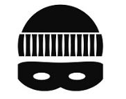
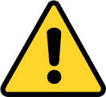
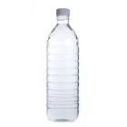
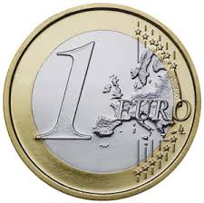

TRAVEL TO EUROPE
1. 도둑을 조심하세요!유럽에 오면 모두 배불뚝이가 되라는 말이 있습니다. 이는 가방을 반드시 앞으로 매라는 말입니다. 유럽지역 어디를 가도 관광지에는 소매치기나 퍽치기등 한국에 있는 모든 범죄자들이 들끓는다고 합니다.실제로 현지 가이드 증언에 의하면 한국사람들이 특히 많이 표적이 되고 현금은 물론 여권까지 잃어버리는 사례가 많이 일어 난다고 합니다. 특히 한국 사람들이 현금을 많이 가지고 다닌다는것을 알기 때문에 한국인은 그들에게 좋은 표적이 된다고 합니다.   |
|---|
2. 물을 1병 이상 가지고 다니세요!유럽의 호텔에서는 식수를 주지 않습니다. 물론 좋은 호텔이라면 경우가 다르겠지만 여행사 상품으로 단체여행중이라면 그런곳에서 이용하는 호텔은 대부분 2~3성급 호텔로 여기에는 정수기도 없고 생수도 없습니다. 그런데 이쪽의 물들은 석회성분이 많아서 함부로 마시면 안됩니다. 반드시 생수를 사서 마셔야 하고 심지어 커피나 컵라면도 생수를 이용해야 합니다. 호텔에서 맥주나 생수를 판매 하기는 합니다. 여행중 이용하게 되는 버스에서도 생수와 맥주를 판매하는데 버스에서 사는게 호텔에서 사는것 보다 저렴하며 물은 1유로 맥주는 2유로 정도 합니다. 1유로는 우리돈 1300원~1400원정도 됩니다, 유럽의 모든 가계들은 마켓을 포함하여 저녁 8시면 문을 닫습니다.대부분의 여행일정이 숙소로 돌아와서 석식을 마치면 저녁8시를 넘기기 때문에 호텔 주변에 운좋게 마켓이 있다고 해도 이용할수가 없습니다.  
|
|---|
3. 잔돈이 생기는 계산은 카드로!유로화는 모든 유럽에서 사용이 가능하지만 여기에 한가지 함정이 있습니다. 체코 같은 경우는 자국화페인 Koruna를 함께 사용하기 때문에 물건을 구입하거나 음식값을 지불할때 유료화 현금을 사용하면 잔돈을 자국화페인 코루나로 내주는 경우가 많습니다. 이때 유료화로 잔돈을 요구하면 주는경우도 있지만 유료 잔돈이 없다며 코루나로만 잔돈을 내주는 경우가 많아서 잘못하면 쓸데없는 코루나 화페만 잔뜩 생기게 됩니다. 그럴때는 잔돈 걱정이 없는 카드결제 하는것이 훨씬 유리할겁니다. 체코 뿐 아니라 스위스도 자국 화페인 스위스 프랑을 사용 합니다. 물론 유료화로 결제는 가능합니다. 
|
|---|
4. 1유로 동전 많이 챙겨가기!가능하면 1유로짜리 동전을 많이 챙겨 가시는게 좋습니다. 그 이유는 유로화는 유럽의 모든 지역에서 사용이 가능한데 가장 많이 사용할곳은 화장실입니다. 우리나라 처럼 어디를 가도 공중화장실이 있고 고속도로 휴게소에서도 공짜로 화장실 이용하고 이런거 없습니다. 무조건 1유로 동전이 있어야 화장실을 이용할수 있습니다. 이용요금은 1유로에서 50센트로 대부분 지하철 이용하듯이 코인을 집어 넣고 통과하게 되어있고 코인 인식하는 기계가 1유로짜리만 인식해서 1유로만 사용이 가능 합니다. 즉 체코라고 해도 체코의 동전인 코루나로는 사용하지 못하고 1유로만 사용 가능합니다. 1유로 동전 사용처는 또 있습니다, 호텔에서 체크아웃 할때 배게맡에 두고오는 매너팁 역시 1유로 통용 입니다. 이밖에 버스에서 물을 살때도 1유로 캔맥주 살때는 2유로 등등.. 1유로 동전의 쓰임새는 많습니다.  |
|---|
5. 늦은 밤에는 조심스럽게 다니기한국은 치안이 잘 되어 있는 편입니다. 하지만 다른 여행지들도 그렇지는 않습니다. 물론 유럽의 여행지들은 비교적 치안이 안전한 편이라 야경이나 가벼운 맥주 한잔하러 가는 문제가 없습니다. 하지만 늦은 밤이나 새벽에 인적이 드문 곳을 홀로 다니시는 건 안전하지 않습니다. 그러므로 한국에서보다 안전에 주의하시는 걸 추천합니다. 
|
|---|